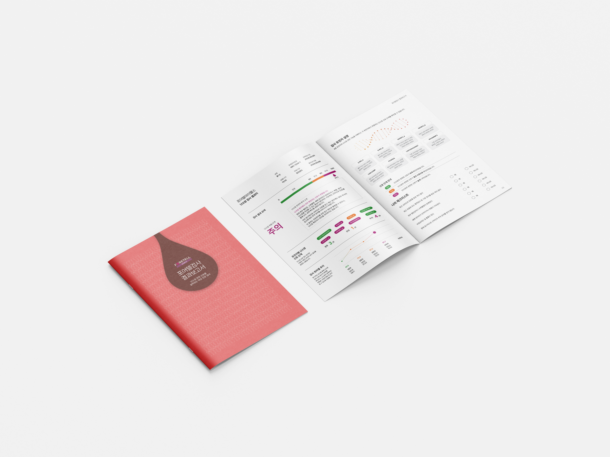
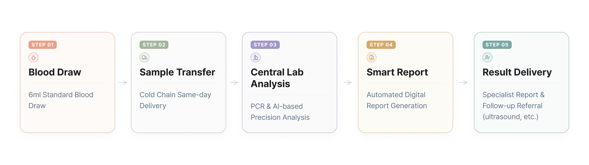
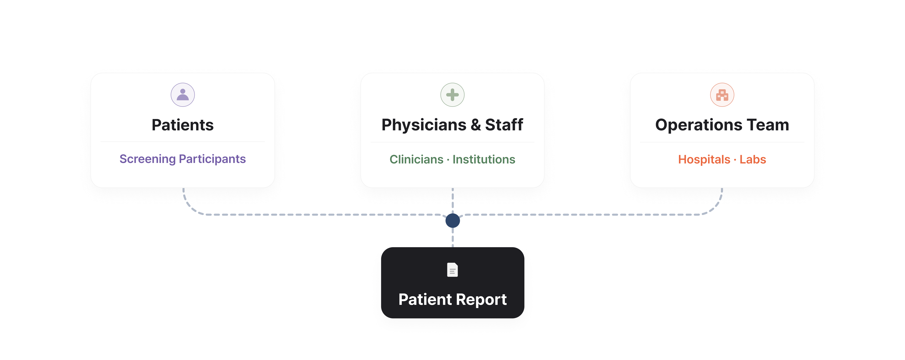
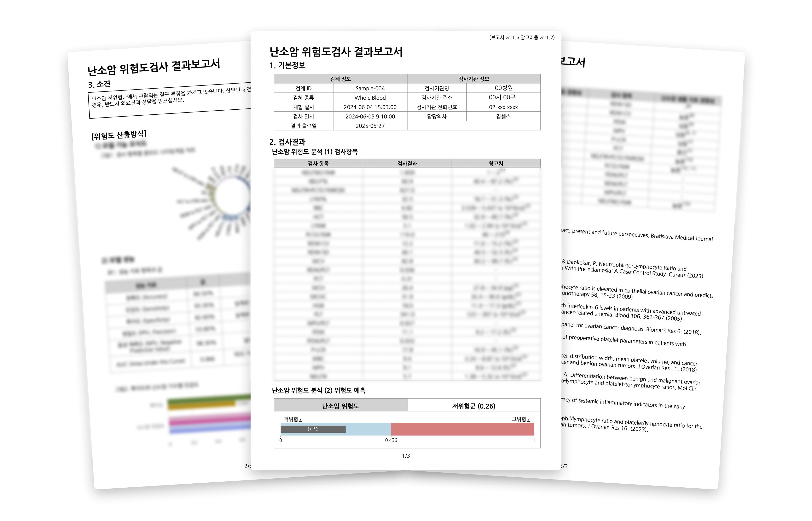
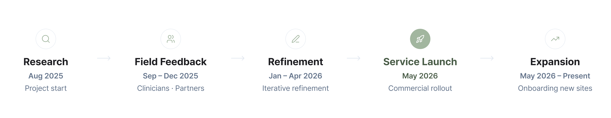
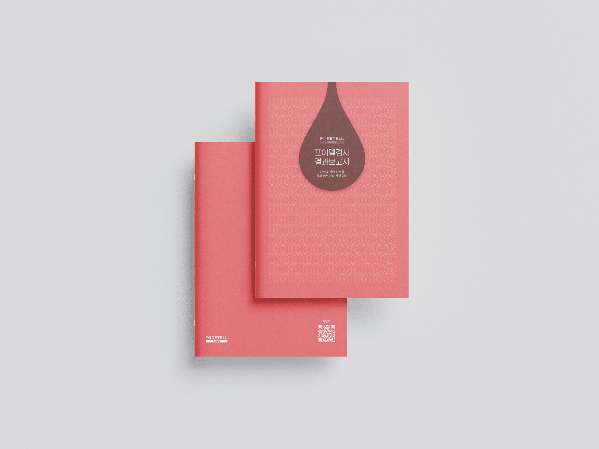

Patient Risk Report Service
Product Design & Service Design
Overview
Brief
Designing a patient-facing ovarian risk assessment report for Foretell My Health, used across multiple clinical settings. The goal was to communicate AI-based blood test results and gene signals in a way that patients could actually understand.
Duration
Aug 2025 - Present
Role
Product Designer, Developer
Skills
- Service Design
- Health Literacy Design
- Risk Communication
- Data Visualization
- Print & Editorial Design
- PDF Automation
- Iterative Prototyping
Tools
- Adobe InDesign
- Adobe Illustrator
- Figma
Context
Foretell My Health brings ovarian risk assessment into everyday clinical settings
Foretell Ovary is an ovarian risk assessment service offered through multiple clinical channels. A blood draw is done at the patient's point of care, shipped to a lab for analysis, and the results come back as a printed patient report delivered through the medical institution.
The full flow goes: blood draw, preservation, lab processing, result analysis, report generation, delivery to clinic and patient. Designing the report meant designing the last step of this journey: the moment a patient opens their results.

Stakeholders
Multiple parties, one report
The patient report was used not only by patients, but also by clinicians and operations teams. Each stakeholder had different needs, requiring a balance between patient understanding, clinical credibility, and scalable delivery.
Patients
People undergoing preventive health screening, often without a background in genetics. When medical data lacks context, the report becomes an important tool for understanding what the results mean and what to do next.
Physicians & Clinical Staff
Doctors, nurses, and clinical staff who deliver the report and respond to patient questions. The design needed to remain approachable for patients while maintaining clinical credibility and supporting clinical conversations.
Operations
Internal teams responsible for generating and distributing reports. Beyond the patient experience, the system needed to support repeatable workflows and automation at scale.

Problem
Patients receive complex test results with no way to interpret them
The test analyzes blood-based signals and a panel of ovarian cancer-related gene markers. A standard lab printout just lists numbers with no frame of reference, and gene signal levels like "관심" (moderate) mean nothing to someone without a medical background.
Without context, patients end up searching the internet. Some panic over results that are actually low-risk. Others miss signals that genuinely need follow-up. The report had to carry two parallel data tracks — an AI-based risk score and a three-level gene signal system — each needing a different visualization approach, both emotionally sensitive given the subject matter.
AI Risk Score
Most patients' scores cluster in a narrow range. Showing a raw number makes small differences look alarming. The design needed to show where a patient stands relative to a clinical threshold, not just give them a number to worry about.
Gene Signal Levels
Eight genes, each with three possible signal levels. The results needed to be readable by someone with no genetics background, without overstating or downplaying what the signals actually mean.

Approach
Iterative design grounded in real patient data and clinical feedback
The design was refined across pre-launch rounds between August 2025 and April 2026. Real patient data, clinical literature, and expert feedback from clinicians and the research team drove decisions about report language, risk category definitions, and clinical opinion text.
Foretell Ovary went into commercial service in May 2026 and is now actively used across multiple clinical settings.
Real Patient Data
Actual reports were reviewed before delivery throughout the pre-launch phase. Working with real data surfaced problems that hypothetical testing never would have caught.
Clinical Literature
Design decisions were informed by peer-reviewed research on ovarian cancer detection, gene marker interpretation, and health risk communication.
Expert Feedback
Clinicians and the research team weighed in on report language, risk category definitions, and the clinical opinion text for each risk level.

Iterations
Five iterations across the report, prevention guide, and cover
The report went through five iterations as it reached new sites and more patients. Every round surfaced something that seemed clear on paper but needed rework in practice, from the risk score visualization to the prevention guide layout to the cover design.
Two of those iterations stand out as clear turning points — the shift from a number-focused report to a position-based visualization.
Draft 1 — Number-focused layout
A clean geometric cover with the risk score displayed as a standalone number and small markers on the side. Gene results were arranged next to a DNA helix illustration, treating each marker as an independent data point. Review feedback flagged that the number-forward framing amplified anxiety and that the gene section was hard to scan.
Draft 2 — Position-based visualization
The risk score was reframed as a color bar with Good, Watch, and Caution zones, so patients could immediately see where they stand rather than interpret a raw number. The gene signal table was reorganized into a scannable comparison structure that supports the three-level system.
The clinical criteria also changed during this period. Originally, the number of gene markers analyzed differed by age group. This was later unified to a single panel across all patients, which required updating both the report structure and the plain-language gene explanations inside the report.


Solution
Results and patient education integrated into a single result report
The final deliverable is a printed result report — one document that brings the test results together with plain-language explanations of ovarian cancer, how the test works, prevention habits, and symptoms. Everything a patient needs to understand their result and decide the next step, held in one place.
Test Results
A results section with the risk score visualization and a plain-language clinical opinion written for the patient's specific risk level.
Patient Education
Ovarian cancer explanations, how the test works, prevention habits, symptom guides, and a self-assessment checklist — all integrated into the same document.



Design Strategy
Designed so patients read position, not just numbers
Instead of asking patients to interpret raw numbers, the report was restructured around three design principles that shift interpretation from data literacy to visual pattern recognition.
01 Position-based risk
The risk score sits on a color bar with clearly marked Good, Watch, and Caution zones. Patients see where they stand relative to a clinical threshold instead of having to interpret a number.
02 Simplified gene signals
The gene signals collapse into a three-level system (Good / Watch / Caution) that communicates signal level without requiring a genetics background. Each gene also gets a short plain-language description.
03 Summary at a glance
A summary indicator at the top of the gene section (e.g., Good 3/8, Watch 1/8, Caution 4/8) lets patients read the overall gene status immediately, before drilling into individual markers.
The report also closes with "나의 체크리스트" (My Checklist), a self-assessment section that helps patients think through symptoms and care history before their follow-up appointment.

Impact
Deployed in real clinical settings and continuing to expand
The report is actively used across multiple clinical settings, with continued expansion over time. Every report handed to a patient is a moment where the design either helps or doesn't, and that weight shaped every wording and layout decision.
Patient reports
Real, personalized reports delivered to patients across clinical sites, with volume continuing to grow over time.
Design iterations
Pre-launch rounds refining risk score visualization, gene signal layout, and prevention guides against real patient data and clinical feedback.
Signal levels
Good · Watch · Caution — a signal-level system that patients and clinicians can read against the same reference, without a genetics background required.
An automated PDF generation pipeline using InDesign data merge made it possible to produce personalized reports at scale from structured patient data files, keeping quality consistent as volume grew.
Reflection
Designing for real patients sharpens every decision
The Weight of Real Data
Working with real patient data instead of hypothetical personas made every design decision feel different. A poorly worded risk category or a confusing visualization wasn't just a UX problem. It was a patient leaving with the wrong idea about their health. That weight was present in every review before a report went to print.
Building for Operations, Not Just Users
The report also had to work for the clinical team producing it. Automating PDF generation from data files meant the design had to hold up against edge cases like missing fields, data format variations, and patient-specific inputs. Designing for the operational side as much as the patient experience pushed the work well beyond typical screen design.
Next Steps
Next steps include formal patient comprehension testing and exploring digital delivery formats that would let patients interact with their results rather than just read a static printed page.